Condition A
AR-supported interaction with spatial audio cues tied to landmarks.
A controlled study examining how augmented reality changes spatial understanding, collaborative recall, and knowledge transfer across teams.
The Gage Park Latinx Council is a Queer, DACA, and Latinx-led grassroots organization rooted in the Southwest Side of Chicago. Through art, popular education, and mutual aid, they run two Cultural Centers that serve as sanctuaries for healing, creativity, and resistance — centering the experiences of immigrant, queer, and Latinx communities that dominant institutions have historically ignored.
This study was commissioned in service of their community programming — specifically to inform the design of a bilingual AR nature education experience for children ages 7–12 anchored to a GPLXC community mural.
Before building Pequeños Soñadores, a critical design question needed answering: does AR actually support the kind of spatial understanding we want children to develop — and can that understanding be passed from one person to another?
Most AR systems are evaluated on whether users complete tasks successfully. This study asked a different question: what kind of understanding does AR leave behind once the interaction ends — and can that understanding be communicated to someone who wasn’t there?
AR is increasingly used in collaborative and educational contexts. But interaction designers rarely ask whether the interaction structure they choose shapes how people mentally represent space — or whether that representation can transfer across people.
For a community AR experience designed for children navigating a mural together, that question is not academic. If AR fragments spatial understanding rather than building it, the design needs to account for that before deployment.
This study was designed to surface that gap. Not to conclude that AR is better or worse, but to understand what it changes about how understanding forms.
AR is increasingly used in collaborative and educational contexts. But interaction designers rarely ask whether the interaction structure they choose shapes how people mentally represent space — or whether that representation can transfer across people.
For a community AR experience designed for children navigating a mural together, that question is not academic. If AR fragments spatial understanding rather than building it, the design needs to account for that before deployment. This study was designed to surface that gap. Not to conclude that AR is better or worse, but to understand what it changes about how understanding forms.
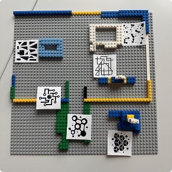
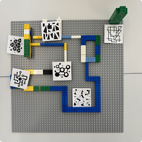
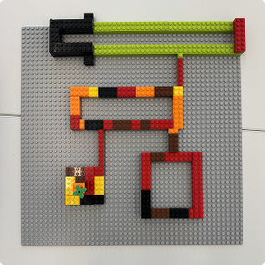
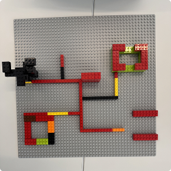
The only intentional variable was the interaction model. Everything else — the task, the environment, the team structure — remained constant.
AR-supported interaction with spatial audio cues tied to landmarks.
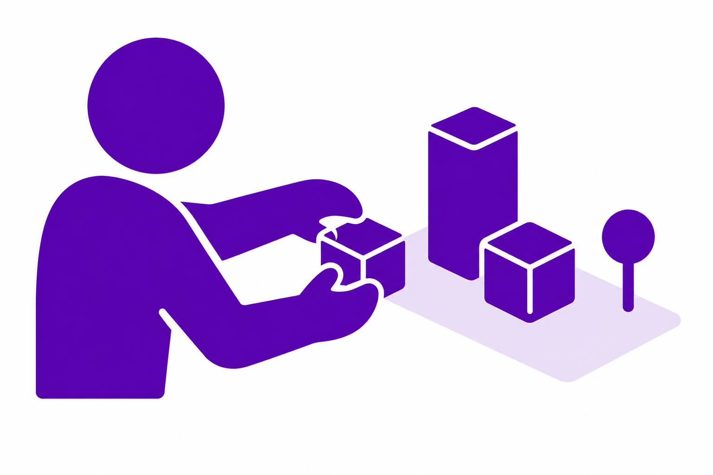
Non-AR interaction, no audio.
Condition A paired each place type with a distinct spatial audio cue. The LEGO forms below were the shared visual vocabulary; the clips are the sounds that fired when an AR marker for that place came into view.
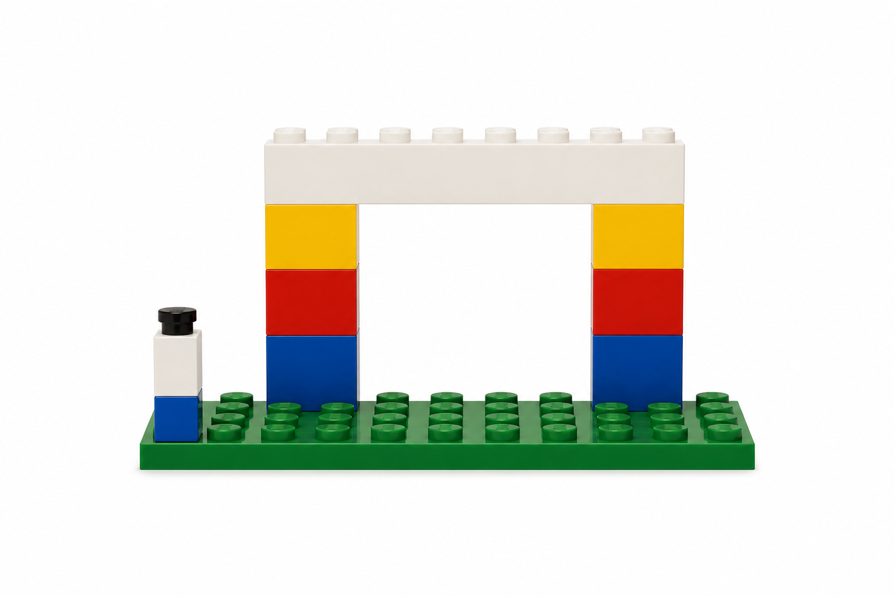
A small gateway of primary-colored pillars with a white lintel. Built to read as a threshold: the clear start of the environment.
A short harmonic chime with a soft brass-like sustain. Designed as a threshold cue so crossing into the space feels like an arrival, not just another marker.
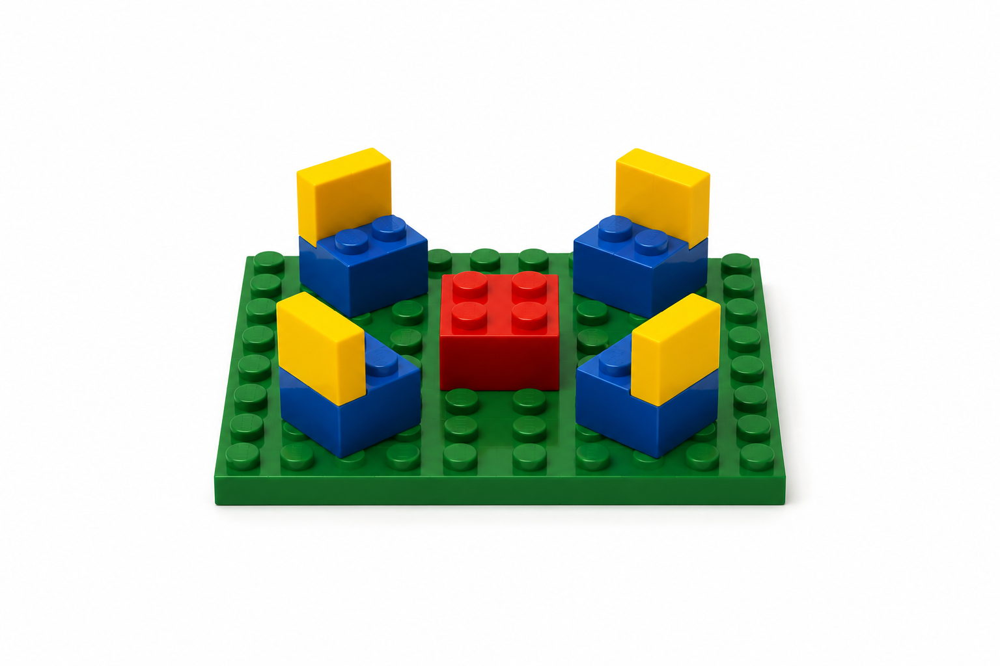
Four inward-facing seats around a central red block. Reads as a shared meeting point rather than a private corner.
A social ambience of distant chatter over water and light bell textures. Meant to feel communal and open, the kind of place you remember as where people gather.
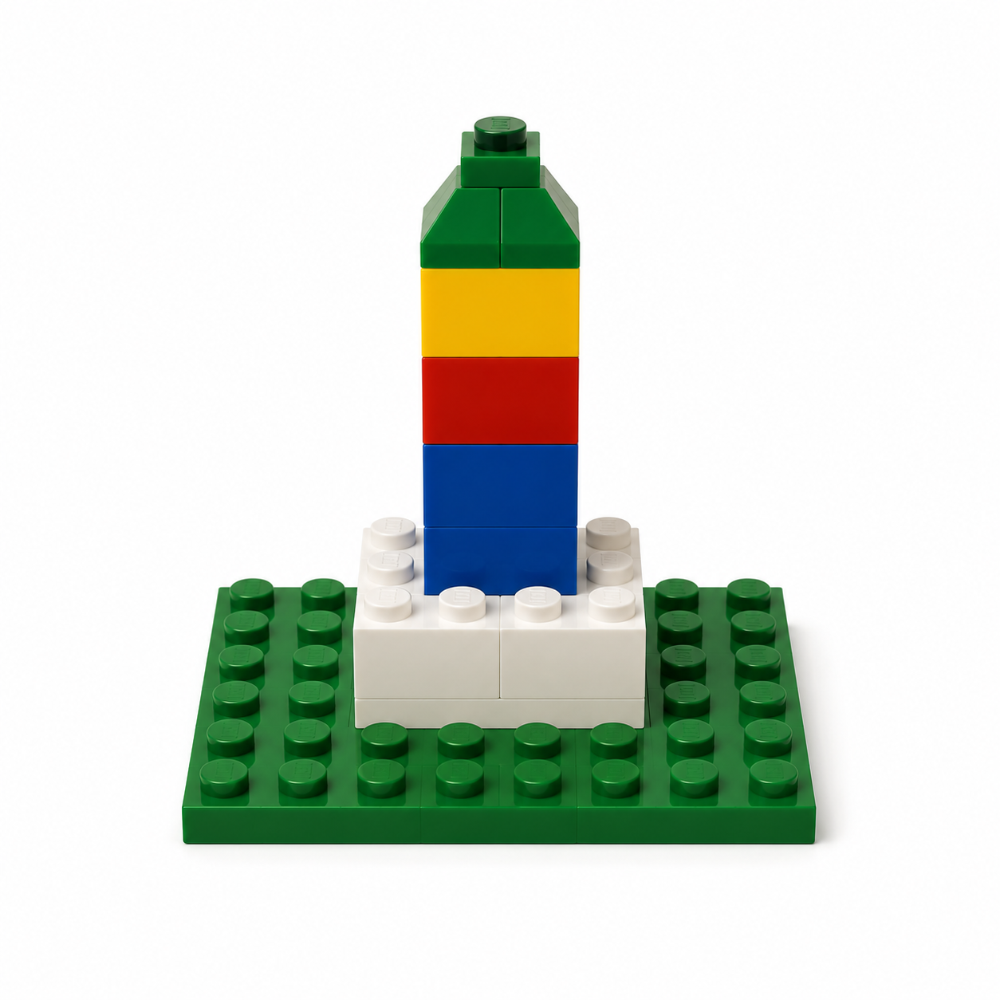
A tall stacked tower with a pointed green top on a raised base. Built to be the most vertically distinct object in the layout.
A steady low musical drone with soft brass overtones. A continuous beacon tone that stays present while you stay on the marker, easy to point back to later in conversation.
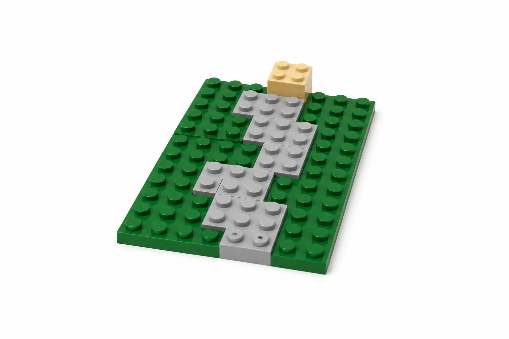
A winding light-gray route across green ground that ends at a tan destination brick. Encodes movement and direction, not a static place.
Rhythmic footsteps with a soft crunch, paced like walking a route. Reinforces path-based memory: sequence and motion instead of a single fixed spot.
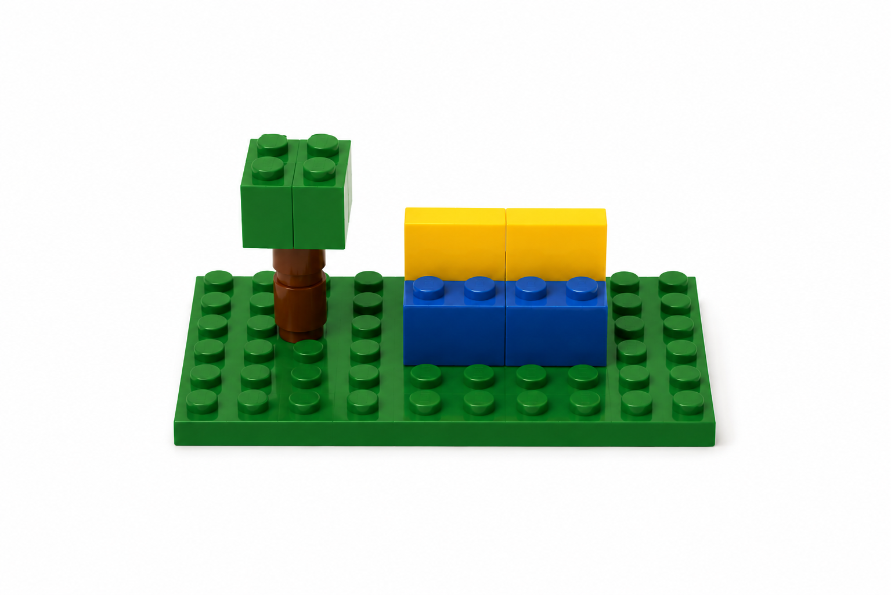
A small tree beside a low blue-and-yellow seat. Sparse, set apart from denser builds so it reads as a pause in the environment.
Soft wind and rustling leaves over a quiet low hum. Low energy on purpose, so the place feels still rather than busy or social.
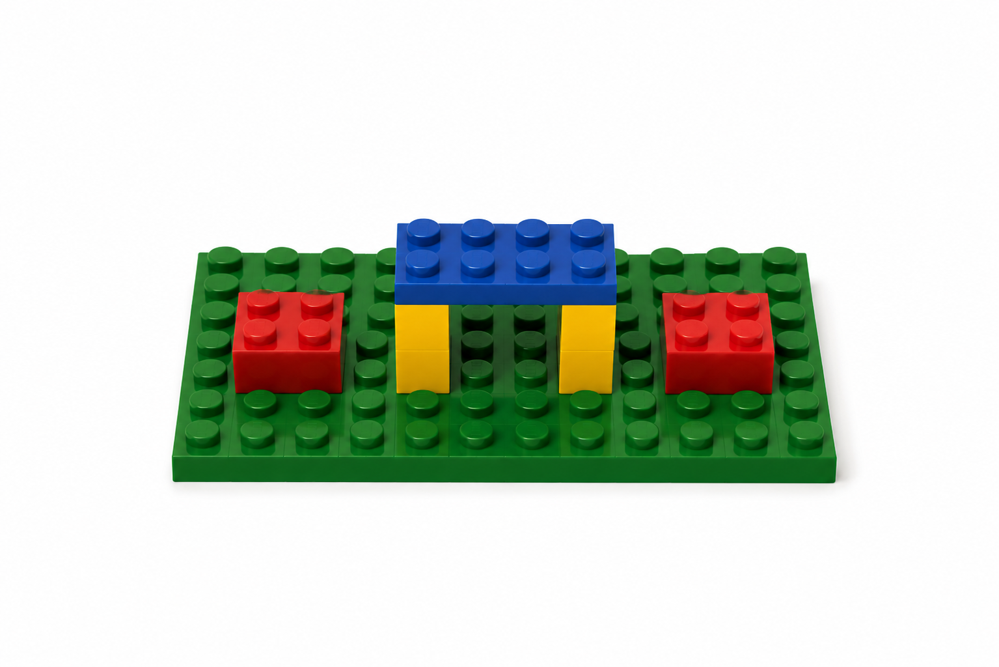
A blue-and-yellow bridge flanked by red blocks. Suggests an activity zone where something is being built or used.
Layered mechanical pulses with engine-like rhythm. Higher energy than the other cues, so the working area stands out as active rather than contemplative.
The only intentional variable was the interaction model. Everything else — the task, the environment, the team structure — remained constant. This structure allowed direct comparison between understanding within a group and understanding after it transferred across groups — which is where the most significant finding emerged.
Build a LEGO-based spatial environment
Phase 1
Both teams are given 10 minutes to build their environments to include an entrance, gathering space, landmark, path, quiet space, and working space.
Within-group recall
Phase 2
Each team is asked to recall their environment’s build. Consensus has to be reached about the entrance, gathering space, landmark, path, quiet space, and working space.
Present the environment to another group
Phase 3
Each team presents their environment builds and the locations of their entrance, gathering space, landmark, path, quiet space, and working space. The team with AR presents with the AR sound triggers.
Between-group recall using another team’s build
Phase 4
Each team swaps their builds and are asked to recall the entrance, gathering space, landmark, path, quiet space, and working space of the opposing team, which they just heard during the presentation.
The only intentional variable was the interaction model. Everything else — the task, the environment, the team structure — remained constant. This structure allowed direct comparison between understanding within a group and understanding after it transferred across groups — which is where the most significant finding emerged.
Build Phase Coding
The build phase coding captured how spatial understanding was constructed — not just what participants built, but how interaction unfolded over time and what spatial structures emerged through collaboration.
Each build session was segmented into behavioral episodes and coded using these four categories.
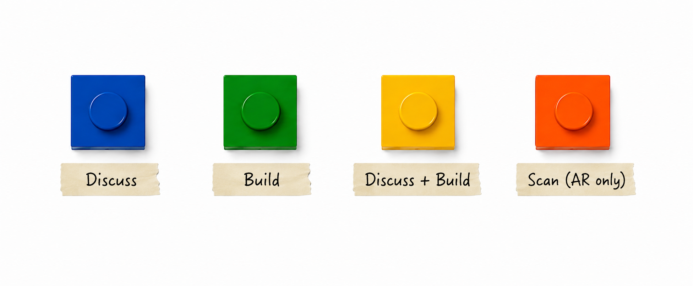
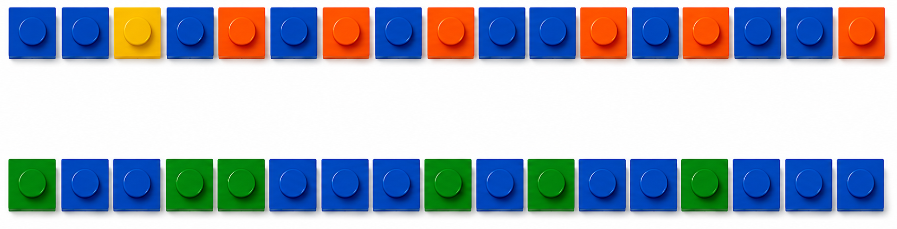
Time (seconds)
One example session per condition. The AR condition shows frequent scan interruptions breaking the flow of discussion and building. The Non-AR condition remains continuous.
Heatmap showing frequency of discussion and modification across the build environment. Each pin marks a coded spatial zone. Coded zone pins include:
Participants construct a shared LEGO environment while the AR system tracks spatial markers in real time.
Darker green indicates higher frequency of interaction. Zones represent spatial areas coded during the build phase — where participants spent time, made decisions, and constructed shared understanding.
Heatmap showing frequency of discussion and modification across the build environment. Each pin marks a coded spatial zone. Coded zone pins include:
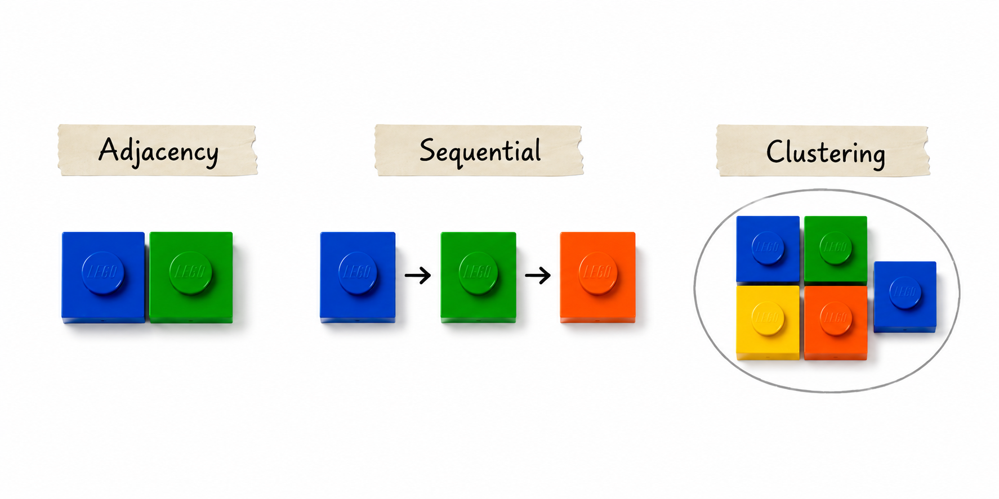
What transfers when the build is done?
Recall Coding
How was spatial knowledge recalled, negotiated, and transferred — not just whether answers were correct, but how they emerged through interaction.
Response trajectories coded for every recall episode. Answers were rarely immediate — most emerged through attempt, correction, and negotiation.
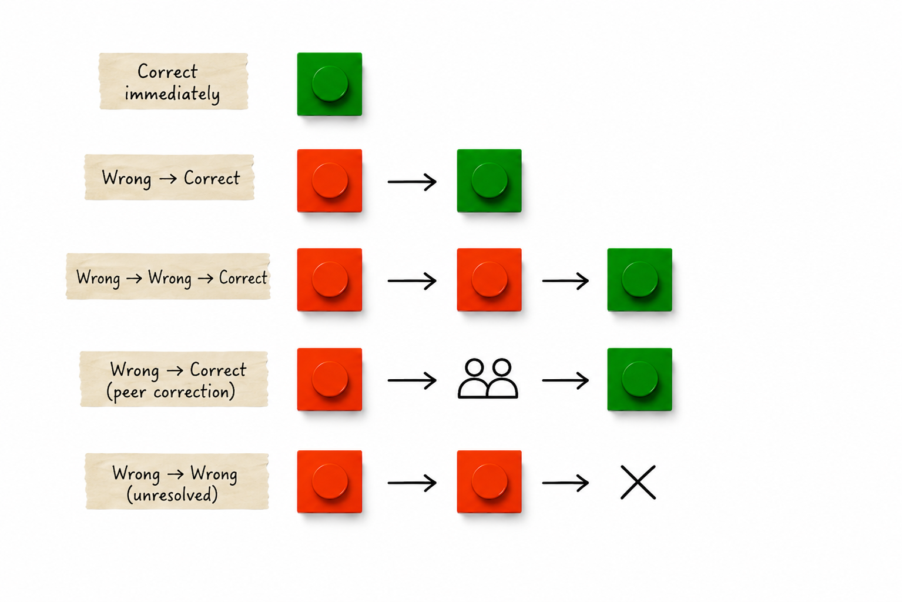
AR groups took longer to reach correct answers and left more unresolved. Non-AR groups resolved immediately at a higher rate with zero incorrect final answers.
| Resolution | AR | non-AR |
|---|---|---|
| Immediate | 67% | 83% |
| Delayed | 17% | 17% |
| Incorrect | 17% | 0% |
Wait, was it the blue one or... I think it was near the scan point?
- AR condition participant during mid-recall
Recall was rarely individual. Most correct answers emerged through distributed negotiation — built collectively rather than retrieved by one person.
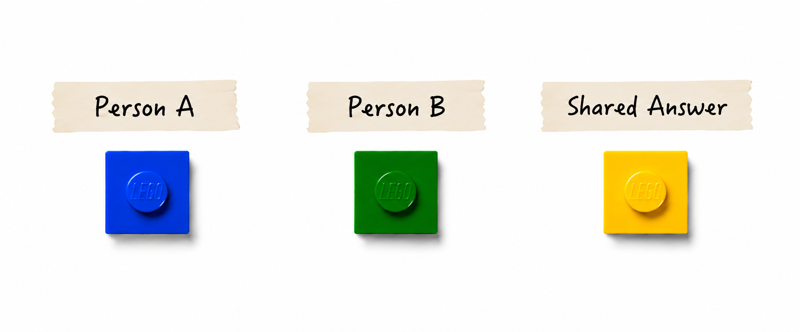
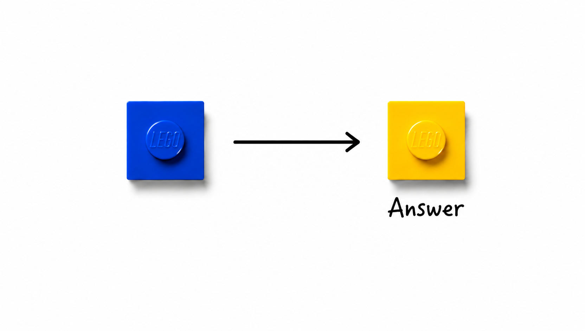
One person, one answer. No negotiation.
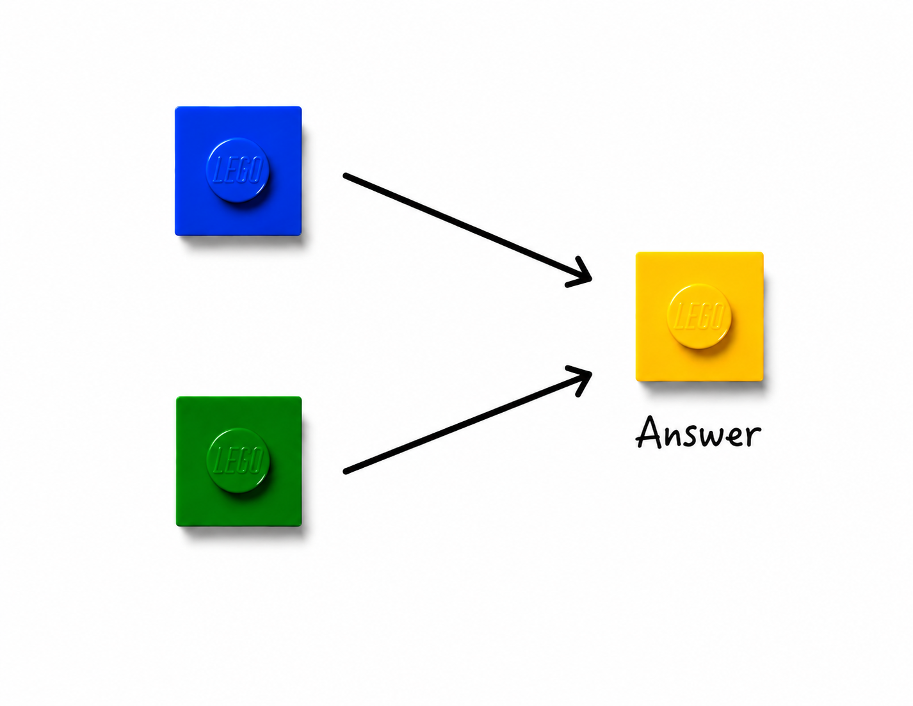
Multiple people arriving at the same answer together.
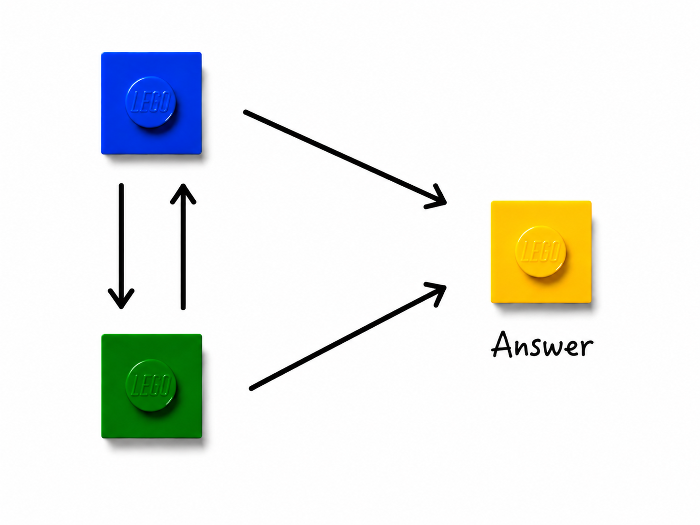
Answer built through exchange, correction, and back-and-forth.
A marker showing where most AR vs Non-AR episodes landed.
AR groups skewed lower confidence even when correct.
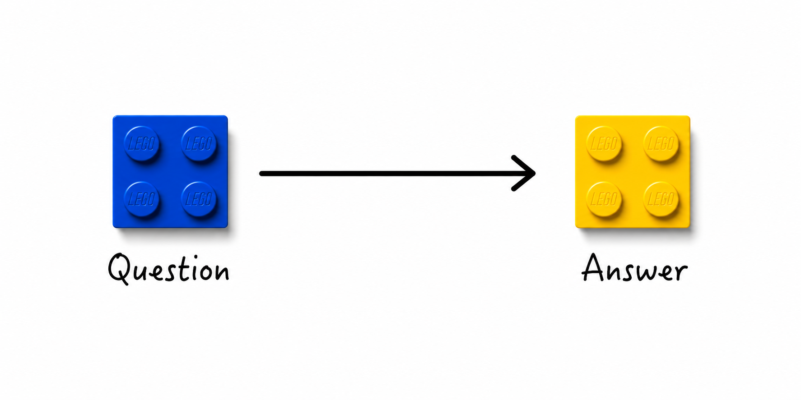
Straight line from question to answer.
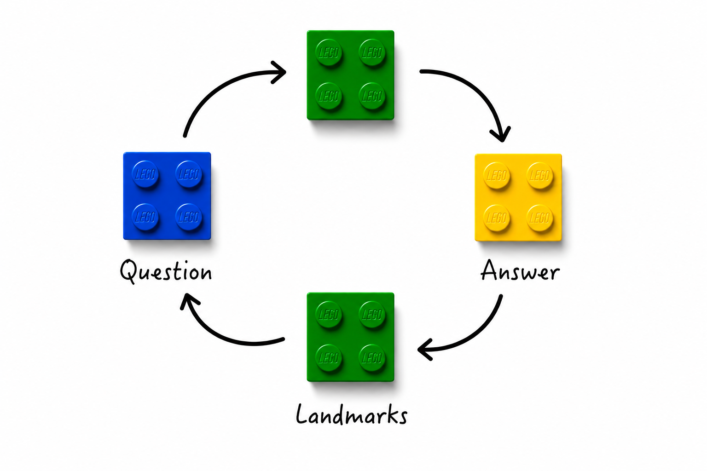
A route through intermediate landmarks.
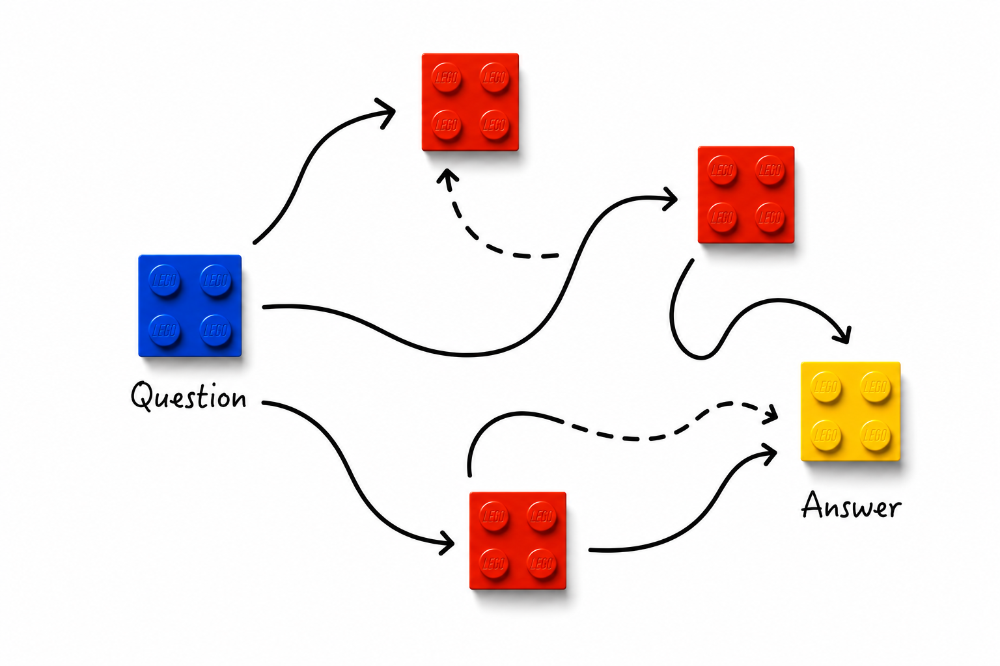
A wandering line with backtracking.
I think it was— no wait, remember the sound? oh right, yeah, it was next to that.
- AR condition participant during between-group recall
Both groups remembered their own environment perfectly. The gap emerged when knowledge had to move across groups — and only the AR condition showed a drop.
Within vs Between Group
Recall

What this means for design
These patterns — fragmented trajectories, lower resolution confidence, concept-level errors, transfer failure — all point to the same root cause: AR structured interaction in a way that shaped memory before recall ever began.
* All recall episodes were coded independently. Each navigation prompt response was treated as a discrete unit of analysis. Coding captured not just correctness but trajectory, social dynamics, and resolution confidence.
This study does not conclude that AR is harmful to learning. It concludes that interaction structure shapes the kind of understanding that forms — and that some structures produce understanding that travels better than others.
AR introduced a secondary task that competed with the primary one. Before adding interaction steps, ask whether they support or interrupt the understanding you’re trying to build.
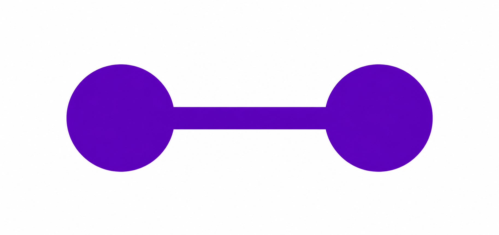
Within-group recall was identical across conditions. The gap only appeared when knowledge had to move across people. Task completion metrics will never surface a transferability problem — you have to design for the handoff.
Correct answers emerged through discussion, correction, and convergence — not individual retrieval. AR designed as a solo overlay misses the collaborative process through which understanding actually forms.
These implications shaped every major design decision in Pequeños Soñadores — the project this research was conducted to inform.
Non-sequential triggers so children build relational, not episodic, spatial memory. Sound as ambient ecological texture rather than a primary interaction mechanism. A Dragonfly tracker that celebrates discovery without requiring completion — because collaborative exploration, not individual task performance, is the point.
See how these findings shaped Pequeños Soñadores.
This study was small by design. The goal was to surface patterns in how interaction structure shapes spatial understanding, generate hypotheses worth testing at scale, and produce findings specific enough to inform real design decisions. It did all three.
The most important thing this study produced wasn’t a statistic. It was a reframe: that AR evaluation has been asking the wrong question. Measuring whether users complete tasks tells you nothing about whether the interaction built understanding worth keeping — or understanding worth sharing. These takeaways are what that reframe looks like in practice.
The scan-based checkpoint structure created a secondary task that competed with spatial learning rather than augmenting it. Technology that adds interaction steps without supporting the underlying cognitive goal doesn’t just fail to help — it actively fragments understanding. This is a design problem, not a technology problem.
Wait, was it the blue one or... I think it was near the scan point?
— AR condition participant during mid-recall
AR participants described space as a sequence of triggers. Non-AR participants described space as a web of relationships. When knowledge had to move across groups, only one of those representations survived the transfer. Interaction designers should ask: does this structure produce understanding that another person could use?
First you hit the entrance marker, then the path, then you’re at the gathering space.
— AR condition participant
The quiet space sits across from the landmark — you can see both from the working area.
— Non-AR condition participant
Sound attached to AR landmarks added cognitive load for original participants but provided meaningful transfer cues for receiving groups. The same design element can hinder and help depending on which side of the knowledge transfer you’re on. Design for the full interaction arc, not just the primary user.
I think it was— no wait, remember the sound? oh right, yeah, it was next to that.
— AR condition participant during between-group recall
Neither condition produced recall through individual memory retrieval. Answers emerged through discussion, peer correction, and collaborative convergence. Designing AR for collaboration means designing for that process — not assuming each person is storing and retrieving information independently.
“Was it left of the landmark?” “No— wait, you’re right, but only if you’re facing the entrance.” “Okay yeah, that’s it.”
— Participants during collaborative recall